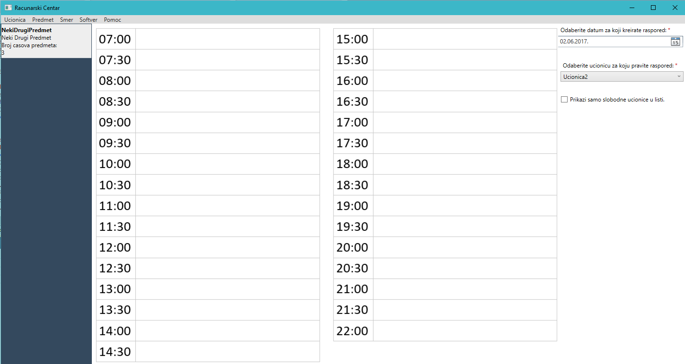
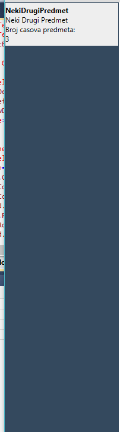

Program se bavi kreiranjem rasporeda termina predmeta po ucionica za racunarski centar.
Predmet poseduje softver koji mu je neophodan za rad, neophodan operativni sistem, i predmet slusa odredjen smer.
Svaka ucionica radi od 07:00 casova do 22:00 casova, za to vreme se u nju za odredjen datum iz liste predmeta
prebacuju predmeti. Predmeti se ne mogu preklapati. Prilikom biranja datuma za koj ce te kreirati raspored u ucionici
nije moguce kreirati za sedmi dan u nedelji, to jest ne mozete kreirati raspored rada ucionice za nedelju.
Jako je bitno napomenuti da broj termina predmeta se gleda na bazi nedelju dana. Tako da ako predmet mozete
ubaciti u raspored za trenutnu nedelju samo onoliko puta koliko ste postavili da je predmetu potrebno termina.
Tek od sledece nedelje mozete ponovo ubaciti predmet u raspored.
O aplikaciji
Aplikacija je namenjena korisnicima koji su upoznati sa radom na racunaru.
Kako je planirana za rad sa velikim brojem podataka, precice su izuzetno bitne i bice navedene u sljedecoj sekciji.
Posto ne mora da vazi da su korisnici domenski strucnjaci, za svaku formu obezbijedjen je jedan nivo pomoci.
Na slici 1. je prikazan glavni prozor aplikacije.

Slika 1. Glavni prozor programa
Precice
Aplikacija poseduje 10 najosnovnijih precica: Ctrl + U sluzi za dodavanje nove ucionice.
Ctrl + Shift + U sluzi za pregledanje svih ucionica.
Ctrl + S sluzi za dodavanje novog smera.
Ctrl + Shift + S sluzi za pregledanje svih smerova.
Ctrl + P sluzi za dodavanje novog predmeta.
Ctrl + Shift + P sluzi za pregledanje svih predmeta.
F1 sluzi za pokretanje dokumentacije u zavisnosti od konteksta.
F5 sluzi za pokretanje i zaustavljanje demo moda.
Demo mod
Kako korisnik nije upoznat sa domenom, a uglanvnom se bavi unosenjem velike kolicine podataka, za shodno je uzeto da se
korisniku pokaže primer unosa predmeta.
Demo mod se pokrece iz glavnog prozora klikom na dugme F5 ili menijem Pomoc > Demo mod.
Korisniku je u svakom trenutku dozvoljeno da pauzira ili nastavi demo takodje klikom na dugme dugme F5.
Prikaz predmeta za prevlacenje
Na slici 2. izdvojen je prikaz predmeta za prevlacenje.

Slika 2. Prikaz predmeta za prevlacenje
Odmah ispod glavnog menija, a sa leve strane radne povrsine na kojoj je prikazana satnica, nalazi se lista predmeta koji treba da
budu rasporedjeni na radnu povrsinu.
Korisniku je olaksano raspoznavanje o kojom predmetu se radi jer je u prvom redu prikazana oznaka predmeta, u drugom redu njen naziv, i da
bi znao koliko casova je potrebno predmetu, u trecem redu je prikazan broj casova predmeta.
Drag and Drop
Prenos predmeta se vrdi direktnom manipulacijom. Prevlacenjem predmeta iz panela na radnu povrsinu definisete
poziciju predmeta na satnici, tj. u koje vreme ce odrzati nastava za taj predmet.
Takodje, desnim klikom misa se korisniku pojavljuje kontekstni meni sa opcijama detaljnog prikaza, izmene predmeta i uklanjanja predmeta sa rasporeda.
Pogledajte jos...
Preporucujemo Vam da procitate i ostatak dokumentacije vezane za aplikaciju.